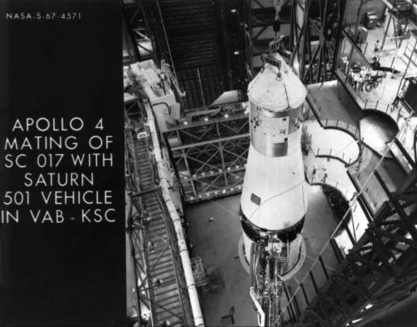
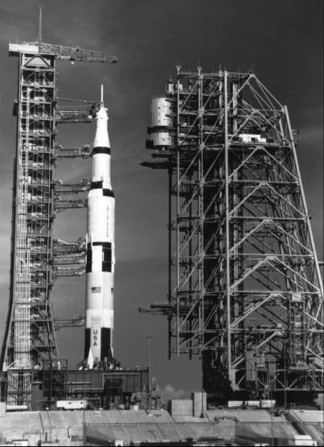

Apollo 4: Command module 017 and Saturn 501 are assembled in the Vehicle Assembly Building, Kennedy Space Center.
Birds, reptiles, and animals of higher and lower order that gathered at the Florida Wildlife Game Refuge (also known by the aliases of Merritt Island Launch Annex and Kennedy Space Center) at 7:00 in the morning of 9 November 1967 received a tremendous jolt. When the five engines in the first stage of the Saturn V ignited, there was a man-made earthquake and shockwave. As someone later remarked, the question was not whether the Saturn V had risen, but whether Florida had sunk.

The spacecraft stack at Launch Complex 39 is poised for the first Saturn V mission and first use of LC 39. The umbilical tower on the launch pad to the left of the spacecraft feeds fuel and electricity to the launch vehicle-spacecraft combination. The mobile service structure to the right may be moved to enclose the spacecraft with an office-workshop compartment and other work levels.
Apollo-Saturn mission 501, now officially Apollo 4 - the first all-up test of the three-stage Saturn V - was on its way. On its top rested spacecraft 017, a Block I model with many Block II features, such as an improved heatshield and a new hatch. The aim of the mission, in addition to testing the structural integrity and compatibility of the spacecraft-launch vehicle combination, was to boost the command and service modules into an elliptical orbit and then power-dive the command module (in an area over Hawaii) into the atmosphere as though it were returning from the moon to the earth. Apollo 4 also carried a mockup of the lunar module. Weighing more than 2.7 million kilograms when fully fueled with liquid oxygen and a kerosene mixture called RP-1, the Saturn V first stage generated 7.5 million pounds of thrust at liftoff.44 The flight went almost exactly as planned, and the huge booster rammed its payload into a parking orbit 185 kilometers above the earth. After two revolutions, the S-IVB third stage propelled the spacecraft outward to more than 17,000 kilometers, where it cut loose from the S-IVB and started falling earthward. Then the service module fired, to send the spacecraft out to 18,000 kilometers for a four-and-a-half-hour soak in the supercold and hot radiation of space. Telemetry signals noted no degradation in cabin environment. With the spacecraft nose pointed toward the earth, the service module engine fired again. When the spacecraft reached the 122,000-meter atmospheric reentry zone, it was blunt-end forward and traveling at a speed of 40,000 kilometers per hour.
Seamen on the U.S.S. Bennington the prime recovery ship in the Pacific, watched the descending spacecraft, with its parachutes in full bloom, until it landed 16 kilometers away about nine hours after its launch from Florida. Swimmers jumped from helicopters to assist in the recovery of spacecraft 017, which took about two hours. Technically, managerially, and psychologically, Apollo 4 was an important and successful mission, especially in view of the number of firsts it tackled. It was the first flight of the first and second stages of the Saturn V (the S-IVB stage had flown on the Saturn IB launch vehicles), the first launch of the complete Saturn V, the first restart of the S-IVB in orbital flight, the first liftoff from Complex 39, the first flight test of the Block II command module heatshield, the first flight of even a simulated lunar module, and so on. The fact that everything worked so well and with so little trouble gave NASA a confident feeling, as Phillips phrased it, that "Apollo [was] on the way to the moon."45
Even before spacecraft 017 had set out on its trip, the Manned Spacecraft Center was working hard on how to get Apollo to the moon before 1970 - only a little more than two years away. On 20 September, Low and others met with top manned space flight officials in Washington to present the center's plan, the key features of which were the need for additional lander and Saturn V development flights and the incorporation of a lunar orbital flight into the schedule. Owen Maynard presented plans for scheduling seven types of missions that would lead step by step to the ultimate goal. He described these steps, "A" through "G," with G as the lunar landing mission.
Phillips asked that the group consider carefully both the pros and cons of flying an additional Saturn V flight. Wernher von Braun and Low favored the flight - von Braun, because he felt the launch operations people would need the experience, and Low, because he believed that data from several flights would be needed to make certain that the big booster was indeed ready for its flight to the moon. Against these opinions, Phillips cited the tremendous workload an added flight would place on the preflight crews at Kennedy, and Mueller reminded the meeting of the already crowded launch schedule for 1968. An additional lunar module mission would be flown only if LM-1 were unsuccessful.
Most discussion centered on the insertion of a lunar orbital flight into the schedule. Houston wanted "to evaluate the deep space environment and to develop procedures for the entire lunar landing mission short of LM descent, ascent and surface operations." Mueller remarked that he regarded the lunar orbit mission as just as hazardous as the landing mission. But the Texas group argued that they had no intention of flying the vehicle closer to the moon than 15,000 meters. They pointed out that the crew would not have to train for the actual landing, but it would give them a chance to develop the procedures for getting into lunar orbit and undocking and for the rendezvous that the lunar landing crew would need. Mueller said, "Apollo should not go to the moon to develop procedures." Low reminded him that crew operations would not be the main reason for the trip; there was still a lot to be learned about communications, navigation, and thermal control in the deep space environment.46 Although a final decision on the lunar orbital mission was not made until later, Maynard's seven-step plan was generally adopted throughout NASA.
Plenty of wrinkles remained to be ironed out, but by the end of 1967 Apollo seemed to be rounding the corner toward its ultimate goal, despite the most tragic event that manned space flight had so far encountered.
Mission Launch
Mission Number Objective Vehicle Trajectory Duration
======= ====== ========= ======= ========== ========
A 4+6 Launch vehicle, Saturn 16,600-km About
spacecraft development, V apogee 8.5
lunar-return entry hours
velocity
B 5 Lunar module development, Saturn Low About
propulsion and staging IB elliptic 6 hours
orbit
C * Command and service Saturn Low earth Up to
module evaluation crew IB orbit 11 days
performance
D * Lunar module evaluation Saturn Low earth Up to
command and service V or orbit 11 days
modules crew performance dual IB
combined operations
E * Command and service Saturn High Up to
modules lunar module V earth 11 days
combined operations orbit
F * Lunar mission deep Saturn Lunar Up to
space evaluation V orbit 11 days
G * Lunar landing
* Mission number dependent on success in steps A and B.
44. "Saturn Blastoff Is Rated among Noisiest Events," Philadelphia Evening Bulletin, 10 Nov. 1967; Robert H. Boulware and Texas M. Ward, "Apollo 4 Flight Plan, Rev. A," MSC, 11 Sept. 1967; NASA, "Project: Apollo 4," press kit, news release 67-275, 27 Oct. 1967; Mueller to Admin., NASA, "Apollo 4 Mission (AS-501)," 24 Oct. 1967, with enc.; MSC, "Apollo 4 Mission Report," MSC-PA-R-68-1, January 1968.
45. NASA, Apollo 4 press kit, p. 2; MSC, "Apollo 4 Post Launch Press Conference," 9 Nov. 1967.
46. Gilruth to Mueller, 19 Sept. 1967; Albert P. Boysen, Jr., memo for file, "Notes of Apollo Flight Program Review at NASA Headquarters on September 20, 1967, Case 310," 24 Nov. 1967, with enc., subj. as above; Low memo, "Mission development and planning," 25 Sept. 1967; Phillips to MSC, MSFC, and KSC, Attn.: Gilruth, von Braun, and Debus, "Apollo Spacecraft Flight Test Program Review Apollo Mission Assignments," 14 Dec. 1967.